OKEクラスタへのデプロイ¶
このステップでは、新しいビルドジョブを作成して、セットアップしたOKEクラスタにアプリケーションをデプロイします。
以下の手順で実行します。
- yamlファイルの編集
- OKEクラスタにアプリケーションをデプロイするビルドジョブを構成する
- ビルドジョブを実行する
- デプロイしたアプリケーションを検証する
1. yamlファイルの編集¶
アプリケーションのデプロイを行うにあたって、Dockerイメージを作成とOCIRへの登録にて
登録したイメージをyamlに設定します。
ハンズオン共通手順で作成したコンピュートインスタンスにログインします。
oke-atp-workshopディレクトリに移動します。
直下にある"oke-atp-helidon.yaml"をviなどで開きます。
1 2 3 4 5 6 7 8 9 10 11 12 13 14 15 16 17 18 19 20 21 22 23 24 25 26 27 28 29 30 31 32 33 34 35 36 37 | |
35行目にpullしてくるイメージのレジストリが設定されています。
この行をDockerイメージを作成とOCIRへの登録にて登録したイメージに設定します。
<リージョンコード>、<オブジェクト・ストレージ・ネームスペース>の部分をご自身の値に書き換えてください。
<リージョンコード>については、OCIRリポジトリへの接続を構成するをご確認ください。
image: <リージョンコード>.ocir.io/<オブジェクト・ストレージ・ネームスペース>/workshop/okeatpapp:latest
修正したmanifestをレポジトリにpushします。
git add oke-atp-helidon.yaml
git commit -m "コンテナレジストリの修正"
git push
2. OKEクラスタにアプリケーションをデプロイするビルドジョブを構成する¶
DevCSで、「ビルド」に遷移して、「＋ジョブの作成」ボタンをクリックします。
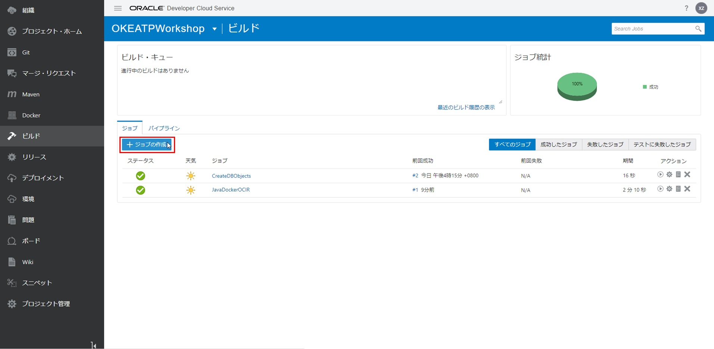
下記項目を入力して、「作成」ボタンをクリックします。
- 名前：ジョブの名前。今回は"OKEDeploy"
- 説明：ジョブの説明。今回は"Deploy application to OKE"
- テンプレート：OKE
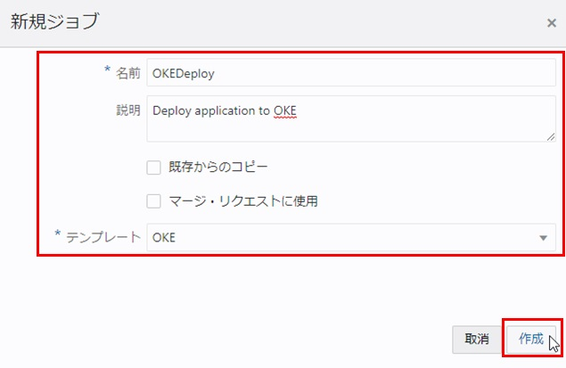
「Git追加」から「Git」を選択します。
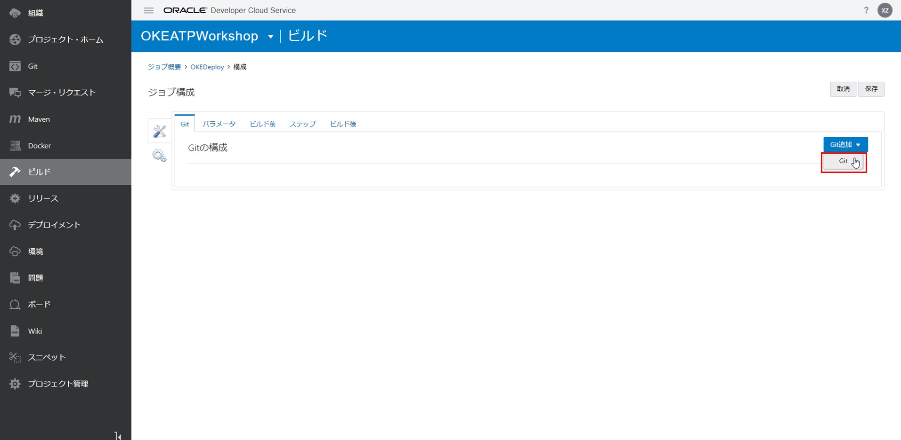
下記項目を入力します。
次のステップを追加します。
- リポジトリ：oke_atp_workshopを選択する
「ステップ」をクリックします。
{kind=link}
「ステップの追加」から「Docker」⇒「Dockerログイン」を選択します。
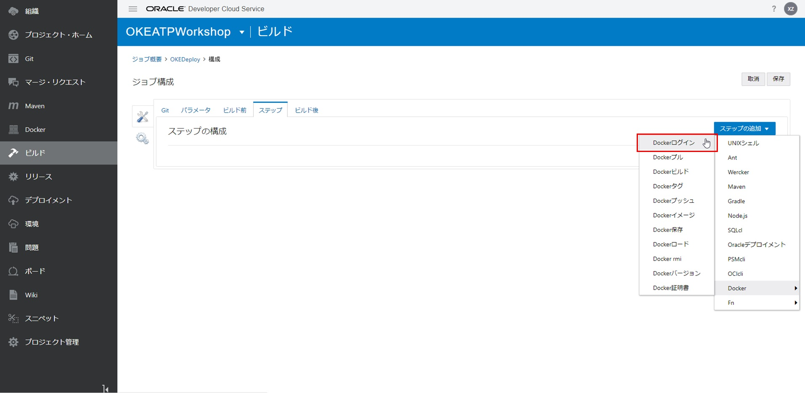
下記項目を入力します。
- レジスト・ホスト：入力したレジストリ名を選択する。今回は"WorkshopOCIR"
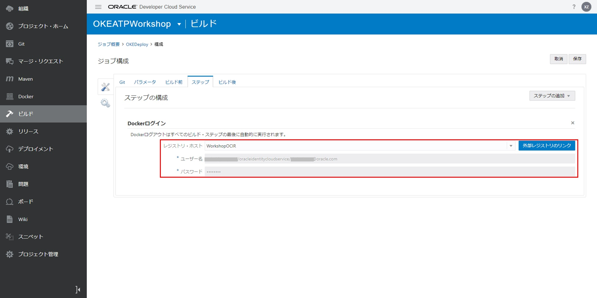
「ステップの追加」から「OCIcli」を選択します。
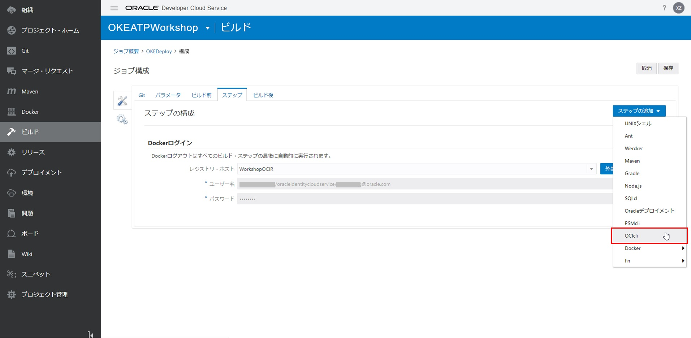
下記項目を入力します。
- ユーザーOCID：ユーザーOCID
- フィンガープリント：API Signingキーのフィンガープリント
- テナンシ：テナントOCID
- 秘密キー：API秘密鍵
- リージョン：リージョン識別子。自身の環境に合わせて選択。今回は、"us-ashburn-1"
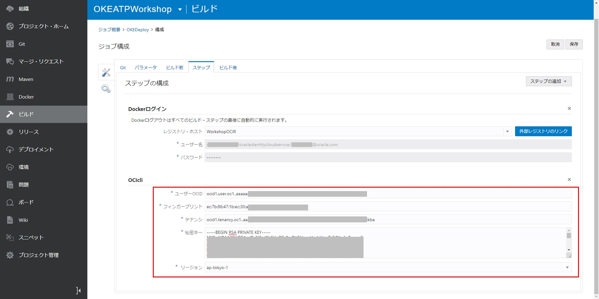
「ステップの追加」から「UNIXシェル」を選択します。
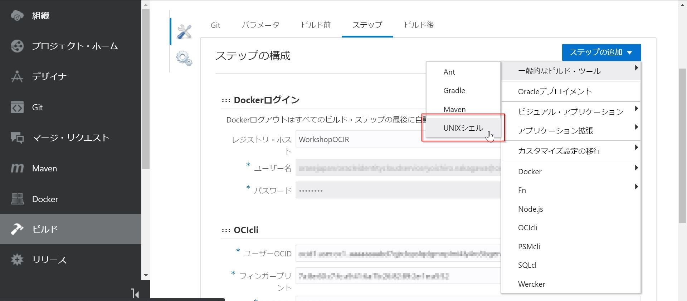
下記項目を入力します。
2行目の<OKEクラスターOCID>と<リージョン識別子>は自身の値に置き換えてください。
mkdir -p $HOME/.kube
oci ce cluster create-kubeconfig --cluster-id <OKEクラスターOCID> --file $HOME/.kube/config --region <リージョン識別子> --token-version 2.0.0
export KUBECONFIG=$HOME/.kube/config
kubectl version
kubectl config view
kubectl get nodes
kubectl apply -f oke-atp-helidon.yaml
kubectl rollout restart deployment/oke-atp-helidon
kubectl get services oke-atp-helidon
kubectl get pods
kubectl describe pods
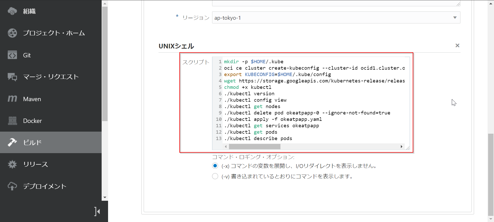
「保存」ボタンをクリックします。
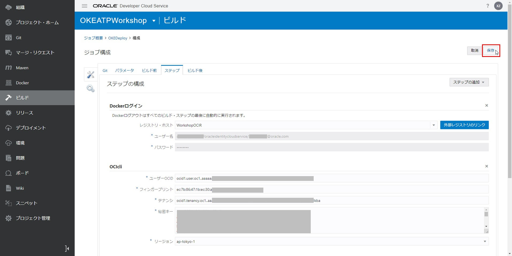
3.ビルドパイプラインの設定¶
DevCSで、「ビルド」に遷移して、「Pipelines」タブをクリックします。
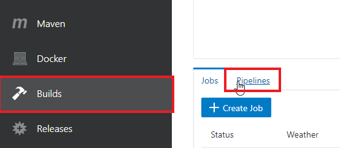
「Create Pipeline」ボタンをクリックします。

以下の項目を入力し、「Create」ボタンをクリックします。
- Name：DeployToOKE
- Description：DeployToOKE
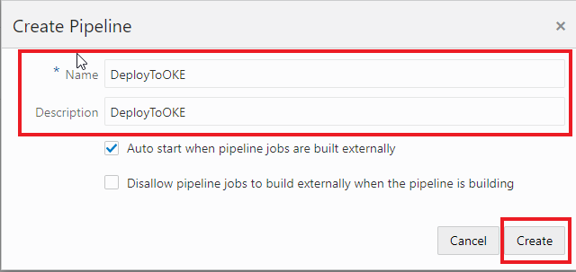
画面左側の「JavaDockerOCIR」と「OKEDeploy」をドラッグ＆ドロップし、下記の図のように並べます。
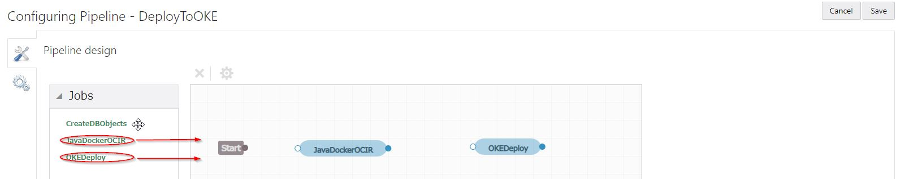
「Start」から「JavaDockerOCIR」、「JavaDockerOCIR」から「OKEDeploy」をそれぞれドラッグし、パイプラインを作成します。
その後、「Save」ボタンをクリックします。
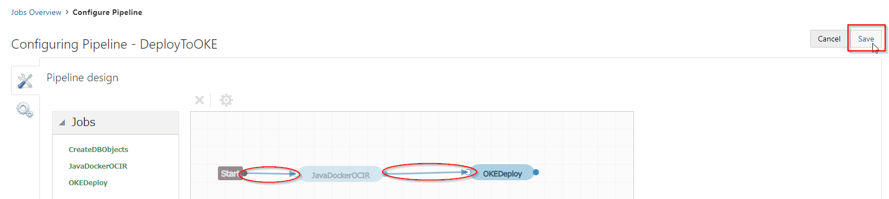
これで、ビルドパイプラインの作成は完了です。
4. ビルドジョブを実行する¶
DevCSで、「ビルド」に遷移して、「JavaDockerOCIR」をクリックします。
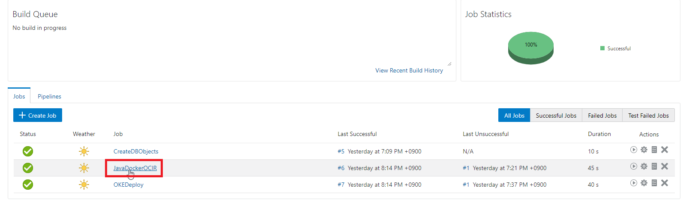
「今すぐビルド」ボタンをクリックします。
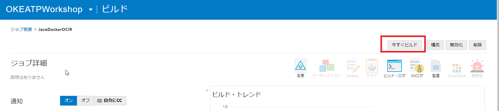
成功すると、ステータスがになります。
「ビルド・ログ」をクリックします。
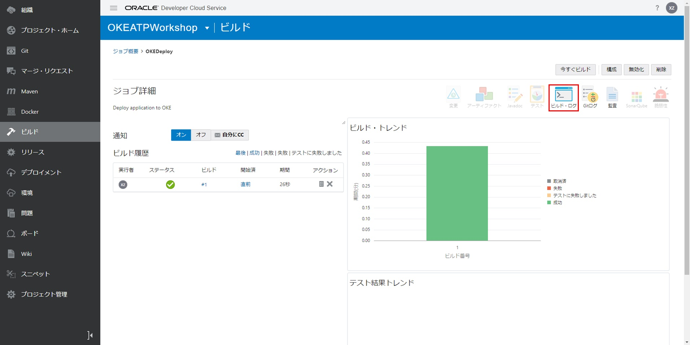
成功すると、"Status:DONE Result:SUCCESSFUL"が表示されます。
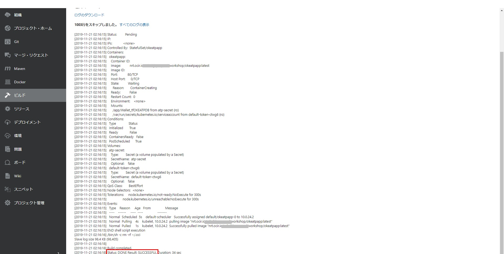
5. デプロイしたアプリケーションを検証する¶
kubectl get serviceでOKEクラスタのワーカーノードのパブリックIP（EXTERNAL-IP）を確認します。
NAME STATUS ROLES AGE VERSION INTERNAL-IP EXTERNAL-IP OS-IMAGE KERNEL-VERSION CONTAINER-RUNTIME
10.0.24.2 Ready node 1d v1.13.5 10.0.24.2 xxx.xxx.xxx.xxx Oracle Linux Server 7.6 4.14.35-1902.2.0.el7uek.x86_64 docker://18.9.1
Webブラウザを起動し、http://パブリックIPにアクセスしてみましょう。
Webアプリケーションが表示されたら成功です。
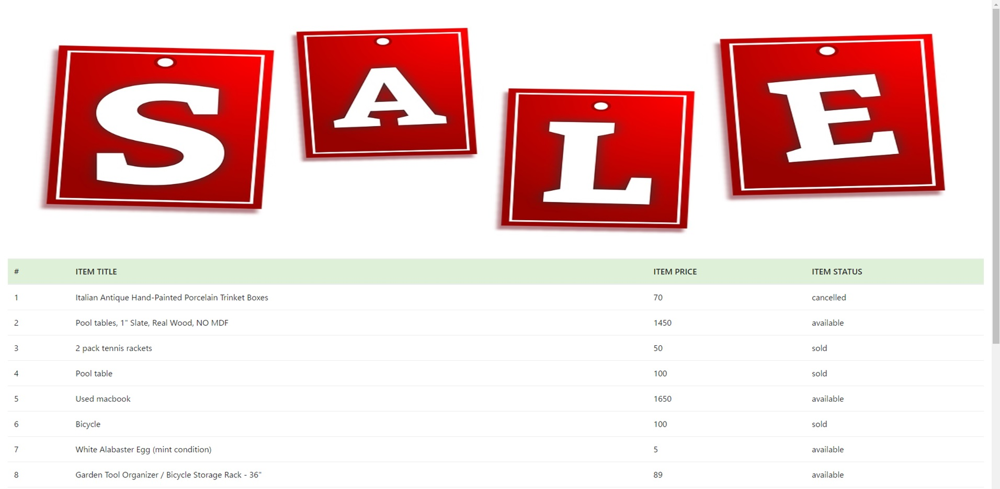
これで、アプリケーションをOKEへのデプロイは完了しました。
続いて アプリケーションの再デプロイ に進んでください。